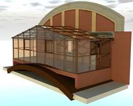
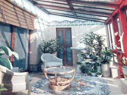

Проектирование зимнего сада...
Многообразие стилистических решений, а также типовых проектов зимних садов позволяет специалистам-проектировщикам компании «Окна Формат» создать неограниченное количество различных проектов и сделать вашу собственную домашнюю оранжерею уникальной.
Проектирование будущего зимнего сада начинается с собственных идей и представлений клиента о том, как должно выглядеть помещение, соответствующее всем его пространственным и эстетическим запросам. Даже если основой для проектирования будет выбран типовой вариант зимнего сада, наш мастер проектировщик создаст уникальный, удобный именно для вас дизайн и воплотит его в 3D графике для получения более полного визуального представления об особенностях будущей конструкции.
Трехмерный проект будет представлен на рассмотрение заказчика, который в случае необходимости сможет внести дополнительные коррективы.
Только после полного согласования с заказчиком будет создан окончательный вариант будущего сооружения и составлен договор, в котором кроме непосредственно проекта и сроков строительства будет прописана конечная цена, включающая все необходимые затраты на производство и монтаж.
Для того, чтобы грамотно спроектировать зимний сад необходимо учесть некоторые особенности, которые помогут сделать ваше пребывание в будущем помещении максимально комфортным.
Расположение относительно дома. Комфортность и создание правильно микроклимата в вашем зимнем саду напрямую зависит от степени освещенности помещения. К сожалению, даже самые передовые технологии принудительного освещения не заменят настоящих солнечных лучей, поэтому лучше всего так сориентировать будущее сооружение относительно сторон света, чтобы большую часть дня на него падал прямой или косвенный солнечный свет. Расположение зимнего сада с южной стороны дома позволит солнцу освещать сооружение в течение всего дня, тогда как зимний сад на северной стороне создаст дополнительное утепление для наружной стены здания, но будет большую часть дня находиться в тени.
Если же вы планируете сквозь витрину зимнего сада любоваться закатом или наблюдать, как встает солнце, необходимо выбрать западную или восточную стену соответственно.
Основные типы построек. Все зимние сады независимо от выбранного стиля и материалов, из которых они будут изготовлены, делятся на автономные сооружения, независимые от основного строения, пристраиваемые, то есть возводимые в качестве пристройки непосредственно к дому и интегрированные в строение, то есть проникающие в основное здание помещения со стеклянной крышей. Зимний сад может примыкать к дому с одно, двух трех и изредка даже четырех сторон света и иметь один или несколько внешних или внутренних углов. Крыша сооружения может быть односкатной, двускатной или иметь несколько скатов в зависимости от вашего желания.
Каркас зимнего сада. Каркас будущего строения должен однозначно выдерживать не только вес предполагаемого остекления, но и максимально возможную массу снежного покрова. Для того чтобы каркас был долговечен, удобен и прост в обслуживании, при проектировании его конструктивных особенностей необходимо учесть множество факторов, таких, как угол наклона крыши, возможные снеговые нагрузки, а также силу и направление ветра.
Материал остекления. Выбор стеклопакетов один из важнейших аспектов проектирования системы зимнего сада. От того, какие стеклопакеты будут использованы при строительстве, напрямую зависят такие качественные характеристики сооружения, как освещенность и теплопроводность, а, следовательно, общий уют и комфортность пребывания в будущем помещении.
Правильное проектирование конструкции вашего будущего зимнего сада возможно только при профессиональном подходе с использованием необходимых технических инструментов и компьютерных программ, поэтому лучше всего доверить эту ответственную работы профессионалам из компании «Окна Формат».